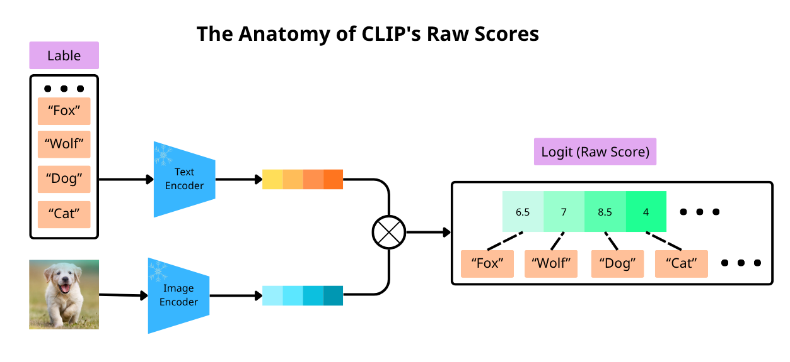
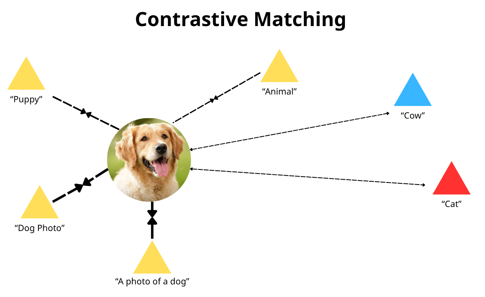
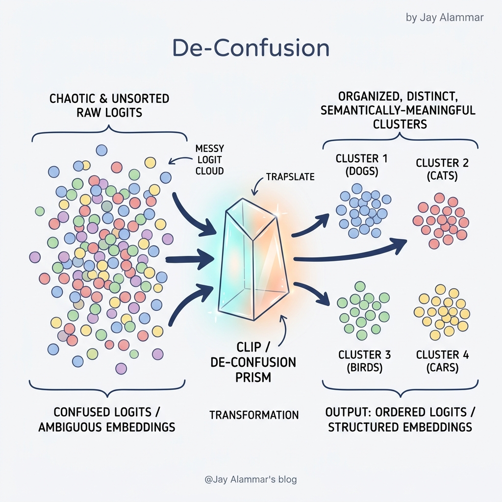
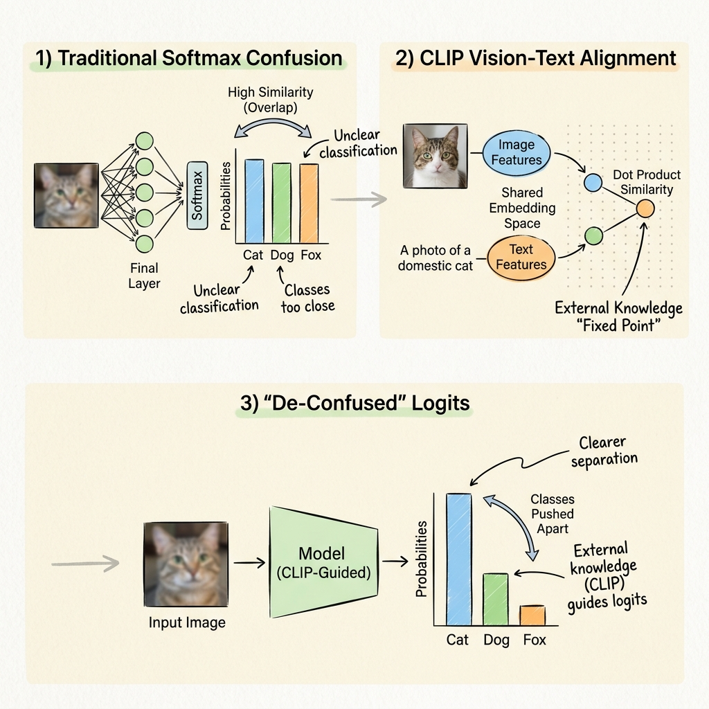

Tran Vu Quang Huy
Visualizing machine learning one concept at a time.
Follow on GitHub • Contact: tranvuquanghuy12@gmail.com
Logits DeConfusion with CLIP for Few-Shot Learning
Key Laboratory of Intelligent Perception and Image Understanding of Ministry of Education,
International Research Center for Intelligent Perception and Computation,
Joint International Research Laboratory of Intelligent Perception and Computation,
School of Artificial Intelligence, Xidian University, Xi’an 710071, China
lishuo@xidian.edu.cn, f63liu@163.com
The Illustrated Logits De-Confusion The Illustrated Logits De-Confusion
Giải mã cơ chế tinh chỉnh Logit bằng tri thức từ CLIP để chinh phục Few-Shot Learning. Decoding Logit refinement mechanism using CLIP knowledge to master Few-Shot Learning.
Tóm tắt Abstract
Với khả năng căn chỉnh ngôn ngữ-thị giác mạnh mẽ, CLIP hoạt động tốt trong các tác vụ học zero-shot
(chưa từng thấy mẫu) và few-shot (chỉ có vài mẫu). Tuy nhiên, qua các thí nghiệm, chúng tôi nhận
thấy rằng các logit của CLIP gặp phải vấn đề nhầm lẫn giữa các lớp nghiêm trọng trong các tác vụ ở
giai đoạn sau (downstream tasks), và sự mơ hồ giữa các danh mục ảnh hưởng nghiêm trọng đến độ chính
xác.
Để giải quyết thách thức này, chúng tôi đề xuất một phương pháp mới có tên là Giải trừ sự
nhầm lẫn Logits (Logits DeConfusion), phương pháp này học và loại bỏ hiệu quả sự nhầm
lẫn giữa các lớp trong các logit bằng cách kết hợp mô-đun Dung hợp Bộ điều hợp Đa cấp
(MAF) với mô-đun Giải trừ sự nhầm lẫn Giữa các lớp (ICD). Kết quả thực
nghiệm cho thấy phương pháp của chúng tôi có thể cải thiện đáng kể hiệu suất phân loại.
Mã nguồn được cung cấp tại: https://github.com/LiShuo1001/LDC
With powerful vision-language alignment, CLIP performs well in zero-shot and few-shot learning.
However, experiments reveal that CLIP's logits suffer from severe inter-class confusion in
downstream tasks, where categorical ambiguity significantly impacts accuracy.
To address this, we propose Logits DeConfusion, which learnably eliminates
inter-class confusion by combining a Multi-level Adapter Fusion (MAF) module with
an Inter-Class Deconfusion (ICD) module. Experimental results demonstrate
significant improvements in classification performance.
Source code: https://github.com/LiShuo1001/LDC
1. Giới thiệu 1. Introduction
Gần đây, hiệu suất vượt trội của các Mô hình Ngôn ngữ-Thị giác (VLMs) trong việc
hiểu hình ảnh đã thu hút được sự chú ý rộng rãi. CLIP (Contrastive Language-Image
Pretraining) thành công trong việc ánh xạ hình ảnh và văn bản vào một không gian nhúng
chung, đạt được quá trình Học Zero-Shot (ZSL) xuất sắc. Tuy nhiên, mặc dù CLIP có tiềm năng lớn
trong Học Few-Shot (FSL), các logit của nó thường cho thấy sự nhầm lẫn giữa các lớp nghiêm trọng,
dẫn đến sự sụt giảm trong độ chính xác phân loại.
Trong thí nghiệm ZSL dựa trên CLIP ban đầu, chúng tôi nhận thấy sự khó khăn trong việc phân biệt
chính xác các giá trị dự đoán. Nguyên nhân chính là do chiến lược huấn luyện đối chiếu của CLIP tập
trung vào khớp cặp thay vì tối ưu hóa ranh giới phân loại rành mạch. Sự khác biệt về miền (domain
differences) càng làm trầm trọng thêm vấn đề này, đặc biệt là khi độ tương đồng giữa các danh mục
cao.
Để giải quyết thách thức này, chúng tôi đề xuất mô hình hóa và loại bỏ sự nhầm lẫn thông qua
việc học. Chúng tôi sử dụng một mô-đun có thể học được (learnable module) để nắm bắt
quy luật nhầm lẫn và sau đó loại bỏ chúng thông qua một cấu trúc phần dư (residual
structure), giúp mô hình đạt độ chính xác mạnh mẽ hơn.
Recently, the superior performance of Vision-Language Models (VLMs) has gained
widespread attention. CLIP successfully maps images and text into a shared
embedding space, achieving remarkable Zero-Shot Learning (ZSL). However, despite CLIP's potential in
Few-Shot Learning (FSL), its logits often exhibit severe inter-class confusion, limiting
classification accuracy.
In initial CLIP-based ZSL experiments (Figure 1 (a)), we observed difficulty in accurately
distinguishing prediction values. This is primarily because CLIP's contrastive pre-training strategy
focuses on pairing rather than direct boundary optimization. Domain differences further exacerbate
this, especially when category similarity is high.
To address this, we propose modeling and learnably removing confusion. We use a
learnable module to capture confusion patterns and eliminate them via a residual
structure, resulting in stronger generalization and higher accuracy.
Các khái niệm cơ bản Basic Concepts
Để hiểu tại sao mô hình CLIP gặp khó khăn trong việc phân loại chính xác, chúng ta cần làm rõ ba trụ cột kiến thức sau: To understand why CLIP struggles with accurate classification, we need to clarify these three knowledge pillars:
1. Logits (Điểm số thô) 1. Logits (Raw Scores)
Định nghĩa: Logits là kết quả của phép toán tích vô hướng (Dot Product) giữa vector đặc trưng hình ảnh và vector đặc trưng văn bản trong không gian nhúng chung. Giá trị này đại diện cho độ tương đồng thô giữa ảnh và nhãn. Trong CLIP, Logits thường được xuất ra dưới dạng một Vector, chứa điểm số của tất cả các nhãn lớp có trong danh sách. Definition: Logits are the results of the Dot Product between image feature vectors and text feature vectors in a shared embedding space. This value represents the raw similarity between an image and a label. In CLIP, logits are typically output as a Vector, containing scores for all class labels in the candidate list.

Hình 1: Quy trình trích xuất đặc trưng và tính toán Vector Logit từ cặp Ảnh - Văn bản. Figure 1: Feature extraction and Logit Vector computation process from Image-Text pairs.
2. Contrastive Matching (Khớp cặp đối chiếu) 2. Contrastive Matching
Cơ chế: CLIP học bằng cách ánh xạ hình ảnh và văn bản vào một không gian nhúng chung. Mô hình cố gắng kéo các cặp tương đồng lại gần nhau và đẩy các cặp không phù hợp ra xa nhau. Do chỉ tập trung vào "khớp cặp", CLIP thiếu đi ranh giới phân loại rành mạch. Mechanism: CLIP learns by mapping images and text into a shared embedding space. It pulls matching pairs closer and pushes mismatches apart. By focusing on "matching," CLIP lacks professional classification boundaries.

Hình 2: Cơ chế kéo-đẩy trong không gian nhúng chung của CLIP.Figure 2: Push-pull mechanism in CLIP's shared embedding space.
3. Confusion Matrix (Ma trận nhầm lẫn) 3. Confusion Matrix
Định nghĩa: Đây là bảng thống kê dùng để đo lường hiệu suất của mô hình. Các ô nằm ngoài đường chéo chính thể hiện sự nhầm lẫn giữa các lớp (Inter-class confusion), nơi mô hình dự đoán nhầm lớp này sang lớp khác. Definition: A statistical table to measure model performance. Cells outside the main diagonal represent inter-class confusion, where the model mispredicts one class for another.

Hình 4: Ma trận biểu hiện sự nhầm lẫn giữa các danh mục tương đồng.Figure 4: Matrix showing confusion between similar categories.

Hình 1: Dòng chảy từ sự "Confused" (hỗn loạn) đến "De-Confused" (ngăn nắp) thông qua lăng kính CLIP.
Trong thế giới của Few-Shot Learning, mô hình AI thường gặp khó khăn khi chỉ có vài ví dụ để học. Một trong những vấn đề lớn nhất là sự nhầm lẫn Logit (Logit Confusion). In the world of Few-Shot Learning, AI models often struggle when they only have a few examples to learn from. One of the biggest issues is Logit Confusion.
Vấn đề: Sự nhầm lẫn giữa các lớp The Problem: Confusion Between Classes
Hãy tưởng tượng bạn đang dạy AI phân biệt giữa "Mèo xiêm" và "Mèo Ragdoll". Vì chúng có nhiều đặc điểm tương đồng, xác suất (logits) mà mô hình dự đoán thường bị chồng lấn, dẫn đến sai sót. Imagine teaching an AI to distinguish between a "Siamese Cat" and a "Ragdoll Cat". Because they share many similar features, the probabilities (logits) predicted by the model often overlap, leading to errors.
❌ Logit Confusion ❌ Logit Confusion
Các lớp có đặc điểm tương đồng bị kéo lại gần nhau trong không gian đặc trưng, gây ra sự nhiễu loạn và dự đoán sai. Classes with similar features are pulled close together in the feature space, causing noise and mispredictions.
✅ De-Confusion ✅ De-Confusion
Sử dụng tri thức bên ngoài để đẩy các lớp này ra xa nhau, tạo ra ranh giới phân loại rõ rệt hơn. Using external knowledge to push these classes apart, creating clearer classification boundaries.
Giải pháp: CLIP làm "điểm neo" tri thức The Solution: CLIP as a Knowledge Anchor
CLIP (Contrastive Language-Image Pre-training) đóng vai trò như một người thầy có kiến thức tổng quát cực lớn. Thay vì chỉ dựa vào vài ví dụ ít ỏi, chúng ta mượn "không gian nhúng" (embedding space) của CLIP để định hướng. CLIP (Contrastive Language-Image Pre-training) acts like a teacher with vast general knowledge. Instead of relying solely on a few examples, we borrow CLIP's "embedding space" for guidance.

Hình 2: Cách tri thức từ CLIP giúp hiệu đính các Logit bị nhầm lẫn. Figure 2: How knowledge from CLIP helps refine confused Logits.
Quá trình Logits De-Confusion hoạt động theo 3 bước chính: The Logits De-Confusion process works in 3 main steps:
- Trích xuất: Lấy ra các logit thô từ mô hình Few-shot hiện tại. Extract: Get raw logits from the current Few-shot model.
- Đối chiếu: So sánh sự tương quan giữa các lớp dựa trên kiến thức ngôn ngữ-hình ảnh của CLIP. Compare: Evaluate correlations between classes based on CLIP's vision-language knowledge.
- Hiệu đính: Điều chỉnh lại các giá trị logit sao cho những lớp dễ nhầm lẫn được phân tách dựa trên sự khác biệt ngữ nghĩa mà CLIP đã biết. Refine: Adjust logit values so that confusing classes are separated based on semantic differences known to CLIP.
Kết luận Conclusion
Bằng cách kết hợp khả năng học nhanh (Few-shot) với kho tri thức khổng lồ (CLIP), chúng ta không chỉ làm mô hình thông minh hơn mà còn làm cho các quyết định của nó trở nên minh bạch và chắc chắn hơn. By combining fast learning (Few-shot) with a vast knowledge base (CLIP), we not only make models smarter but also make their decisions more transparent and certain.